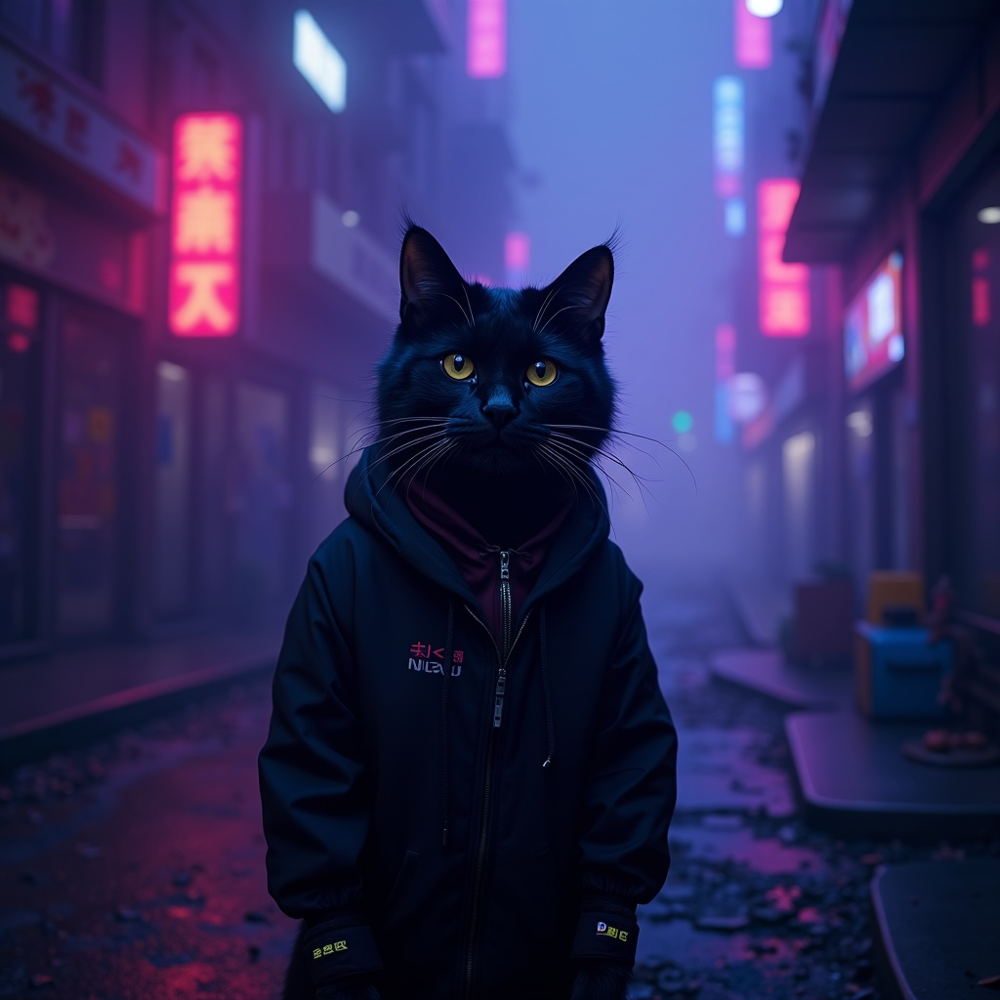

O mnie

Cześć! Mam na imię Michał, ale w internetach jestem znany jako Catty. Urodzony w 2008 roku. Jestem osobą ze spektrum autyzmu i cukrzycą typu 1.
Moją największą pasją jest informatyka (głównie hardware, ale też trochę software). Interesuję się również muzyką rock i metal, grami (szczególnie ścigałkami), jazdą rowerem, podróżami i filmami science-fiction.
Pomysł na stronę zrodził się po przeglądaniu stron znajomych (szczególnie dzięki Matisiowi, który miał przyjemność mi ją zrobić ❤️).
| 👍 Lubię | 👎 Nie lubię |
|---|---|
|
• Muzykę rock i metal • Windows XP i 7 • Samochody BMW • Filmy: F1, Top Gun: Maverick, Predator: Strefa zagrożenia • Homebrew Xboxa 360 • Język niemiecki • FLAC i DSD • Blu-ray, CD, SACD • Dźwięk przestrzenny DTS 5.1 • Konsole 7. generacji • Windows 10 w stylu XP/7 (np. Relive 7) • HDR10 i Dolby Vision • Włatcuf móch • Stare iPhone’y (3G, 4, 5) • FFlynn, Matisio, Klovy, K-Rys • Fotografię • Stare reklamy (głównie Serce i Rozum oraz Tesco) |
• Lenistwa (także mojego) • Windows Vista i 11 • Ekosystemu Apple'a • MP3 i OGG • Subskrypcji streamingowych • TikToka • ChatGPT (tzn. jest OK, ale - moim zdaniem - Gemini lepsze) • Konsol 9. generacji • Podwyżek cen RAM i SSD • Produktów z Temu • Dram w internecie • Dezinformacji • Współczesnych reklam • Gier z antycheatem (Fortnite, CS2) • Polskiego rapu (OK, szanuję, ale to nie dla mnie) |